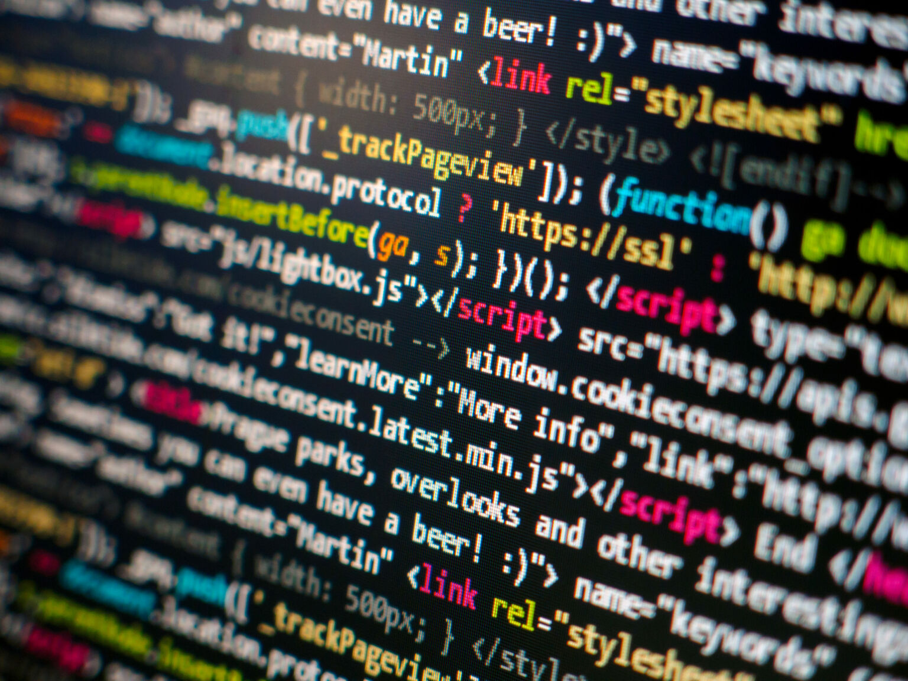

Programimi kompjuterik është proces i dizajnimit, shkruajtjes, testimit, debuggimit, dhe mirëmbajtjes së kodit burimor të programeve kompjuterike. Ky kod burimor shpesh është shkruar në gjuhë programuese. Qëllimi i programimit është të krijojë program që ekspozon një trajtim të caktuar të dëshiruar. Procesi i shkruajtjes së kodit burimor shpesh kërkon ekspertizë nga më tepër fusha të ndryshme, duke përfshirë dijeninë nga lëmija e aplikimit, algoritmeve të specializuara dhe logjikës formale.
Programimi është gjuhë e cila përmban një bashkësi të rregullave me anë të cilave i urdhërojmë kompjuterat të bëjnë diçka ose i japim udhëzime.
Meso me shume Prishtine KosoveGjuha programore është në nivel më tëulëtlartë se gjuha maqinerike e cila përbëhet prej bit-ave